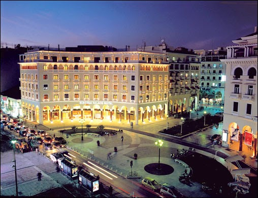
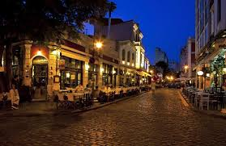
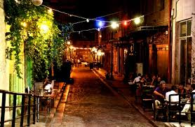

Η νυχτερινή ζωή της Θεσσαλονίκης είναι εξίσου έντονη και αρκετά πιο συναρπαστική από την καθημερινότητα αυτής της πόλης.
Ο λόγος είναι απλός: Η διασκέδαση στη Θεσσαλονίκη δεν σταματά ποτέ, ή τουλάχιστον έτσι πιστεύουν όλοι όσοι ζουν,
σπουδάζουν ή απλώς επισκέπτονται τη Θεσσαλονίκη έστω και για μια φορά στη ζωή τους.
  